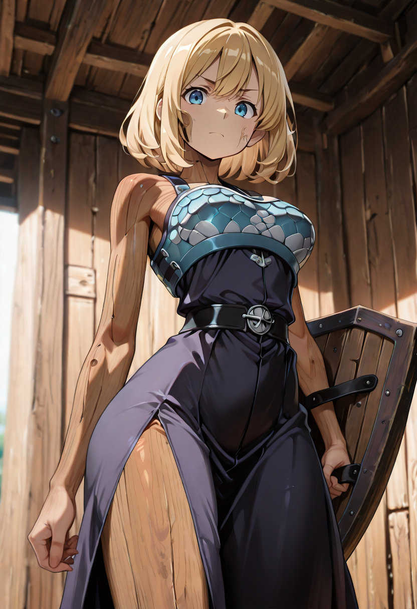
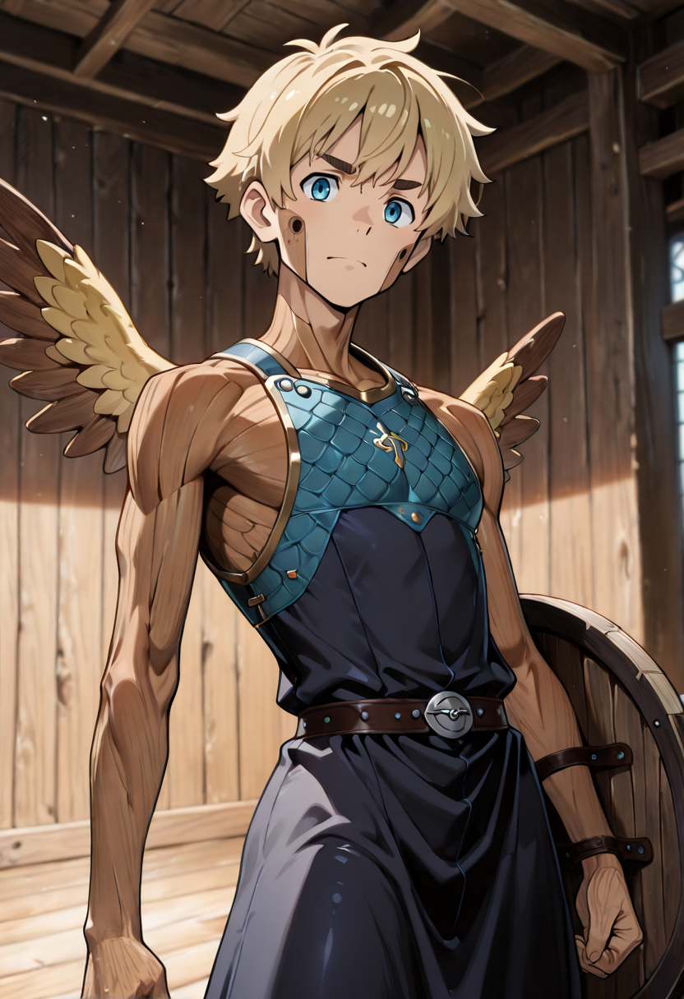

The Wall That Breathes
They grew from the Ashblade not through training but through choice. At some point in their existence as reborn undead, they were given a choice: to run or to stay. They stayed , and the act of staying changed them. Wood thickened. Roots deepened. Wings emerged, though only good for gliding, not true flight.
Thornguards remember, in fragments, what it felt like to protect something. A home. A child. A gate. The memory is not specific , it is more like a shape, the outline of a door they once stood in front of. That outline is now their battlefield identity. They plant themselves in front of it, whatever it is, and they do not move.
They have developed a combat philosophy unique to undead tacticians: Materializzazione, the art of sacrificing speed for substance. By focusing all ethereal energy inward, they become temporarily denser than stone , trading swiftness for absolute resistance. Enemies who attack a Defender mid-Materializzazione often injure themselves on the impact.
Tactical Data

Shield Bash
Base Attack
Materialization
Active SkillGallery